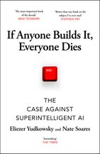
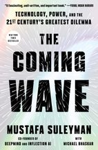
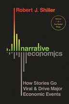
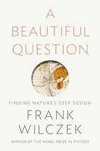

Library
This is the place to find reviews and data for the books I have read and the ones I am reading. If you have a suggestion email me.
69 books

If Anyone Builds It, Everyone Dies
Peak: Secrets from the New Science of Expertise
The Hitchhiker's Guide to the Galaxy
Breakneck
Admiravel mundo novo
Life was never again the same
Ways of Being

The Coming Wave
Being Jewish After the Destruction of Gaza
Foundry
2nd Cold War memorabilia.
Invisible Cities
The Hair Carpet Weavers
A beautiful tapestry of themes on Humanity
Hunger
O Fim da Vergonha
From latent to mainstream: the new right is alive.
Tales From The Café
What if?… The coffee’s getting cold. Hurry.
Véspera
Novembro
The Death of Ivan Ilych
Na Cabeça de Ventura
Assim nasceu o Chega.
Passar das Marcas
The Constant Gardener
Siddartha
A Promised land
Yes, he could. and he did some.
Lord Arthur Savile’s Crime
Talking to My Daughter About the Economy: or, How Capitalism Works — and How it Fails
Permanent Record
“There is, simply, no way to ignore privacy”

Narrative Economics: How Stories Go Viral and Drive Major Economic Events
The Argonauts
To re-read
The Great Gatsby
The Perks of Being a Wallflower
***Perfectly Reasonable Deviations from the Beaten Track***
**A Brief History of Intelligence: Evolution, AI, and the Five Breakthroughs That Made Our Brains**
*Fly, Wild Swans: My Mother, Myself and China*

A Beautiful Question: Finding Nature’s Deep Design
A Day In the Life of Ivan
A Partícula no Fim do Universo
Category Theory in Context
Co-Intelligence
Communist Manifesto
Corpse Washer
Debt: The First 5.000 Years
Eric Clapton: an autobigraphy
Feynman Processes
Fórmula de Deus
Hillbilly Elegy
How Much Land Does a Man Need
Inadequate Equilibria: Where and How Civilizations Get Stuck
Incompletude
Isaac Newton
Leadership
Life is Hard
Material World
Mathematics: A Very Short Introduction
Networks 101
Nexus
O Menino do Dedo Verde
O Planalto e a Estepe
On Freedom
Prisoners of Geography: Ten Maps That Tell You Everything You Need to Know About Global Politics
Maps are good, without them we’re truly lost.
Situational Awareness
Spies Against Armageddon: Inside Israel's Secret Wars
The Bitcoin Standard
The Future of Geography
The Hour Between Dog and Wolf: Risk Taking, Gut Feelings and the Biology of Boom and Bust
The Mighty and The Almighty: Reflections on America, God, and World Affairs
The Number Mysteries: A Mathematical Odyssey Through Everyday Life
The Three-Body Problem
The Vegetarian
Who Will Defend Europe
No matching books.